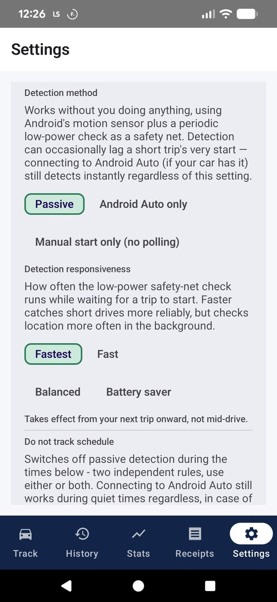
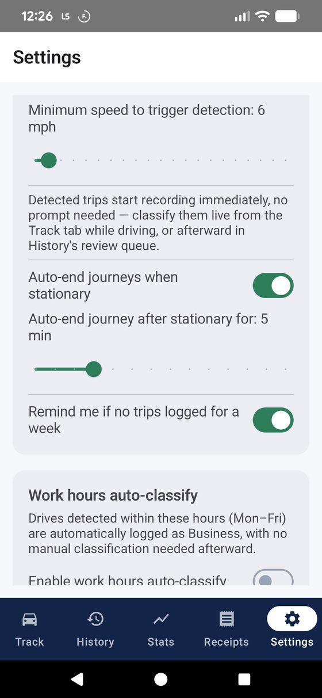
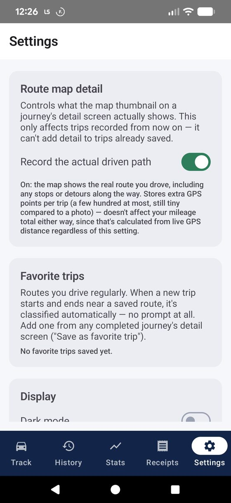
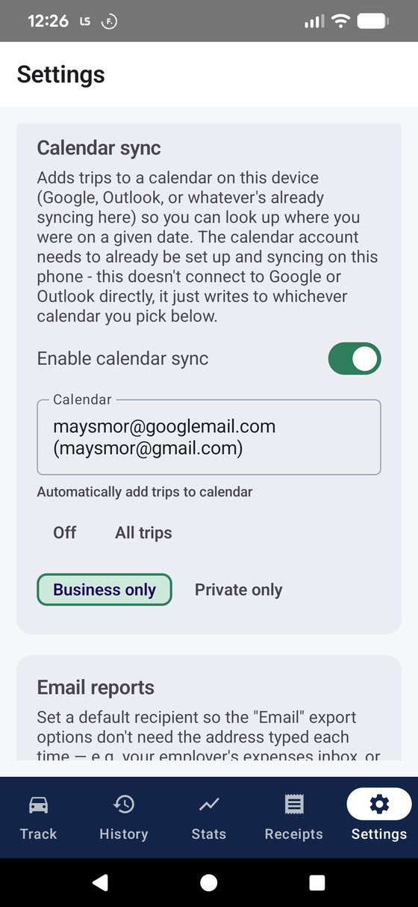
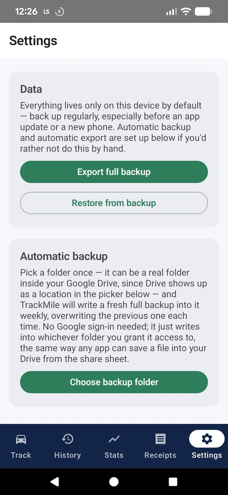

Vehicles
Every vehicle you drive for logged trips lives here — car, van, motorcycle or bicycle — each with its own current odometer reading and vehicle type, since motorcycles and bicycles use flat HMRC rates while cars and vans use the tiered 10,000-mile rate.
One vehicle is always marked DEFAULT — that's the one auto-detected trips attach to. Tap Set default on any other vehicle to switch it. Deleting a vehicle removes it from this list but leaves any journeys already logged against it untouched.
Add vehicle asks for a name (e.g. "Van 1"), a starting odometer reading, and a type. That's it — no registration lookup, no DVLA integration, just a simple record.
Location precision
Shows whether Android currently has Precise or Approximate location for TrackMile — this isn't a toggle TrackMile controls itself. Android deliberately keeps that switch in its own Settings app for privacy reasons, so this section just shows the current status and links straight there.
Approximate location is only accurate to roughly 1–3km, which makes distance tracking and journey detection unreliable — if trips are coming out with obviously wrong mileage or not being detected at all, this is the first thing to check.

Automatic detection
The largest section, and the one worth spending a minute on. TrackMile uses Android's low-power motion sensor to notice "in a vehicle" first, and only switches on GPS to confirm and track once that fires — GPS isn't running continuously in the background.
Auto-detect journeys — the master on/off switch. Notify when a trip is detected and Notify when a journey ends control whether you get a notification for each, independent of each other.
Detection method — three genuinely different strategies:
- PassiveDefault — works with zero effort using the motion sensor plus a periodic low-power safety-net check. Can occasionally lag a short trip's very first few seconds.
- Android Auto only — detects the instant your phone connects to Android Auto. The fastest and most battery-efficient option, but only catches drives where you actually connect.
- Manual start only (no polling) — zero background location activity, ever. You tap "Start journey" yourself every time. Most battery-efficient of all, at the cost of doing it by hand.
In Passive mode, Detection responsiveness controls how often the safety-net check runs while waiting for a trip to start: Fastest (15s), Fast (30s), Balanced (60s), or Battery saver (3min). Faster catches short drives more reliably but checks location more often in the background. Takes effect from your next trip, not mid-drive.
Also in Passive mode, a Do not track schedule can switch detection off entirely during set times — two independent rules: full days off (e.g. weekends), and a separate active-hours window on the days not marked off (e.g. weekdays 7am–7pm only). Android Auto still works during quiet times regardless, in case of a genuinely unexpected trip. Re-arms itself within about 15 minutes of a quiet period ending.
Further down: Minimum speed to trigger detection (5–25mph, default 10) sets how fast you need to be moving before a trip is confirmed. Auto-end journeys when stationary ends a trip itself once you've been stopped for a set number of minutes (2–15, default 5) — no need to remember to tap End. Remind me if no trips logged for a week nudges you to check detection is still working if it goes quiet.

Work hours auto-classify
Drives detected within a set Mon–Fri time window are automatically logged as Business, with no manual classification needed afterward — useful if your working hours are consistent and most of what you drive during them genuinely is business mileage.
Switch it on, then set a start and end time. Anything detected outside that window still goes through the normal classification flow (live from Track, or the review queue in History).

Route map detail
Controls what the map thumbnail on a journey's detail screen actually shows. This only affects trips recorded from now on — it can't add detail to trips already saved.
- OffDefault — the map draws a straight suggested route between your start and end points only. Quick and lightweight, but won't show any detour or stop made along the way.
- On ("Record the actual driven path") — the map shows the real route you drove, including stops or detours. Stores extra GPS points per trip (a few hundred at most — still tiny compared to a photo).
Either way, your mileage total is unaffected — that's always calculated from live GPS distance, regardless of this setting. This only changes what the picture looks like.

Favorite trips
Routes you drive regularly. When a new trip starts and ends near a saved route, it's classified automatically — no prompt at all. Add one from any completed journey's detail screen ("Save as favorite trip").
Manage or remove saved routes from this list — each shows its name, trip type, and category if one's set.
Display
Dark mode — a straightforward on/off toggle for the app's theme.
Distance unit — Miles or Kilometres. Since HMRC mileage relief is calculated in miles, switching to kilometres changes what's displayed but doesn't change the underlying HMRC figures.
Calendar sync
Adds trips to a calendar already on your device (Google, Outlook, or whatever's syncing there), so you can look up where you were on a given date. This doesn't connect to Google or Outlook directly — it just writes to whichever calendar you pick, using the account that's already set up and syncing on your phone.
Enable calendar sync requests calendar permission the first time you turn it on. Once granted, pick a Calendar from the dropdown — every calendar TrackMile has write access to on the device.
Automatically add trips to calendar has four options: Off (add trips one at a time from a journey's detail screen instead), All trips, Business only, or Private only — handy if you only want work trips cluttering a work calendar, or vice versa.

Email reports
Set a default recipient so the Email export options on History, Receipts and Statistics don't need an address typed each time — your employer's expenses inbox, or your accountant, for example. Leave it blank to pick a recipient in your email app each time instead.
Data & backup
Everything lives only on this device — there's no cloud account or sync. This section is the safety net.
Export full backup zips every vehicle, journey, favourite route and receipt (including the photos) into one file you can save via the share sheet — to Google Drive, email it to yourself, wherever. Restore from backup wipes current data and replaces it wholesale with the backup's contents; a confirmation dialog spells this out before it happens.
Choose backup folder sets up automatic weekly backups — pick a folder once (a real folder inside Google Drive works, since Drive shows up as a location in the picker) and TrackMile writes a fresh full backup into it weekly, overwriting the previous one. No Google sign-in needed; it just writes into whichever folder you grant access to, the same way any app can save a file into your Drive from the share sheet.

About
Shows the installed app version, a reminder that HMRC mileage rates are set by gov.uk and may change (TrackMile applies current published rates, but always double-check before submitting a tax return), and whether a Google Maps Static API key is configured for route thumbnails.
If a Maps key hasn't been set up, journey detail screens fall back gracefully to a plain "View route on Google Maps" button instead of a broken image — nothing breaks if this is left unconfigured.